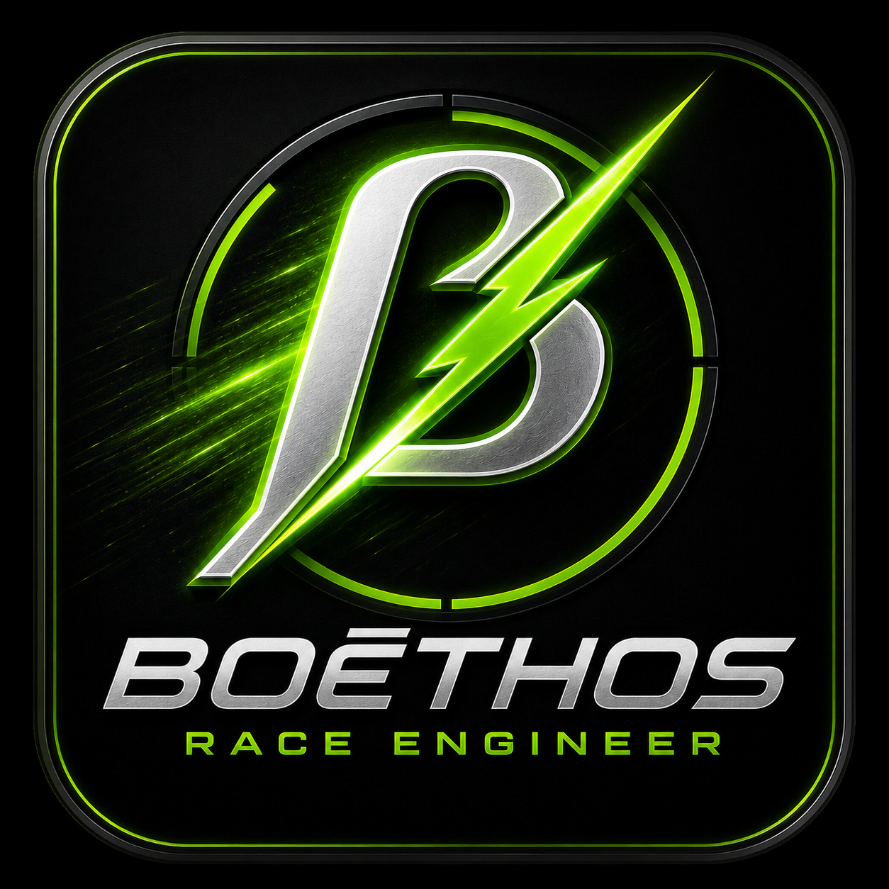
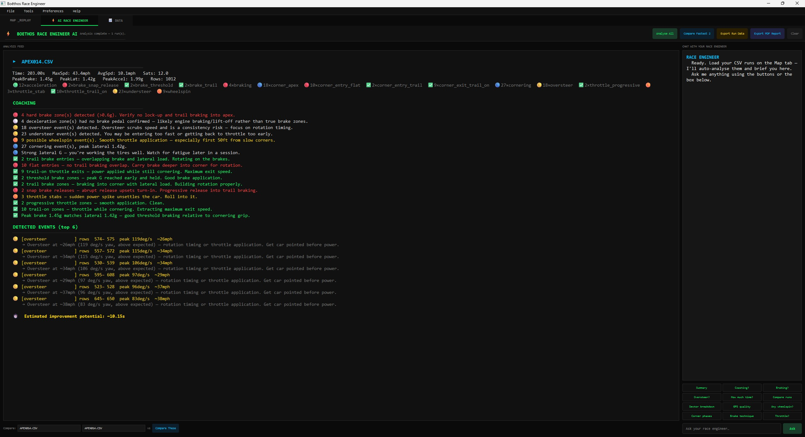
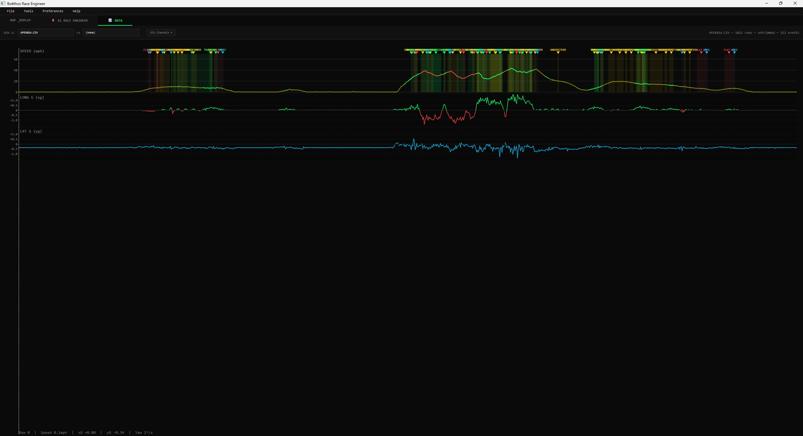

Last Chance Speed Co.
Drive. Build. Repeat.

Drive. Build. Repeat.
Boēthos is the software side of the ERX ecosystem, built to help drivers review runs, understand data, set course gates, and improve faster.
View Status
Boēthos is designed to turn raw data into useful feedback. The goal is not just to record a run, but to help a driver understand where time was gained, where time was lost, and what to focus on next.
Boēthos transforms raw ERX logger data into clear visual feedback, helping drivers understand every run, compare performance, and make smarter setup and driving decisions.

View event summaries, vehicle information, session statistics, and key performance metrics in one place.

Review GPS paths, speed traces, G-forces, sensor values, and logged events from every run.
Overlay multiple runs, inspect racing lines, compare sectors, and visualize where time was gained or lost.
Set start, finish, and sector gates from the phone app before a run.
Review GPS path, speed, and movement data after each run.
Break a course into sections to compare consistency and find lost time.
Future tools will help translate data into practical driving feedback.
Built to work directly with ERX logger hardware and logged data files.
Map overlays, speed traces, and run comparisons for driver development.
Review vehicle position, speed, and path through the course using GPS-based replay tools.
Overlay multiple runs to identify differences in line selection, speed retention, and consistency.
Use driver feedback tools and future race engineer systems to identify areas for improvement.
Course setup, Bluetooth connection, GPS gates, and ERX communication.
Run review, sector comparison, speed overlays, and driver-focused visuals.
Driver coaching logic, recommendations, and deeper data interpretation.
Boēthos is currently in development as part of the ERX ecosystem.
Email: LastChanceSpeedCo@outlook.com